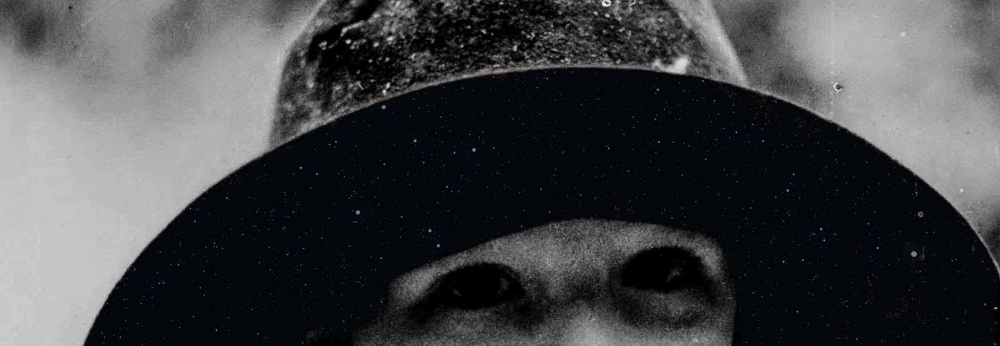
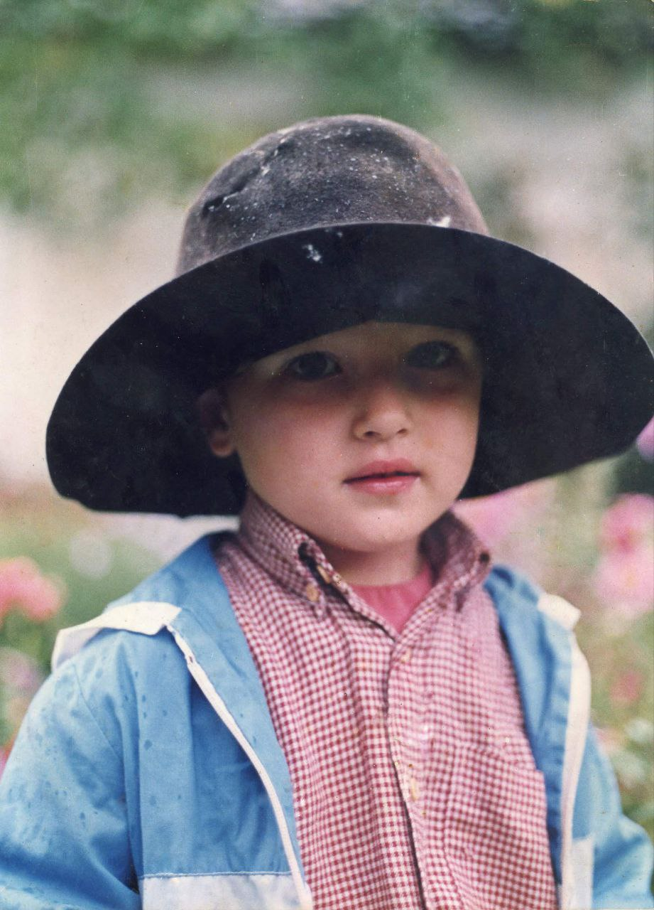
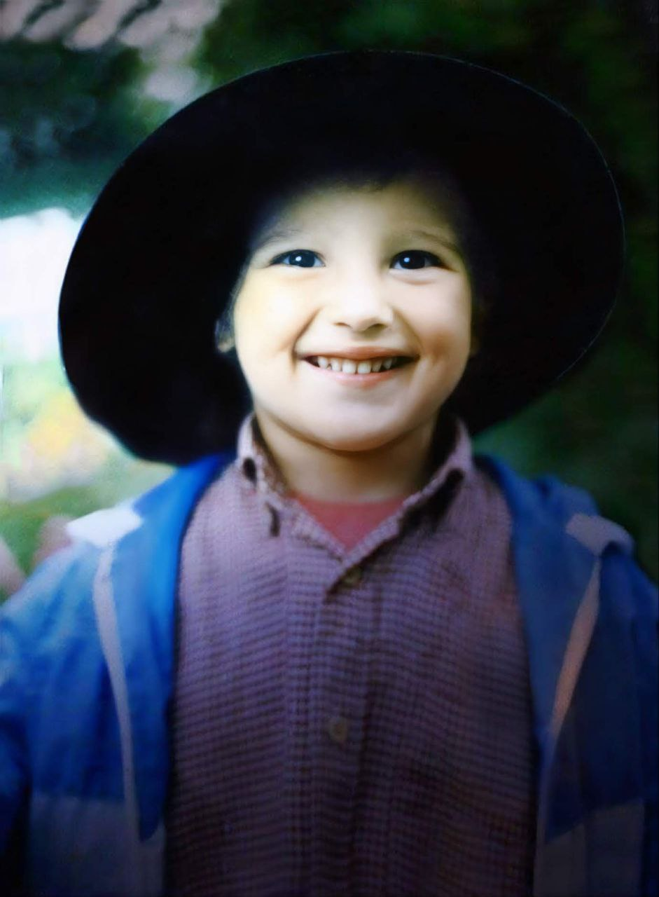
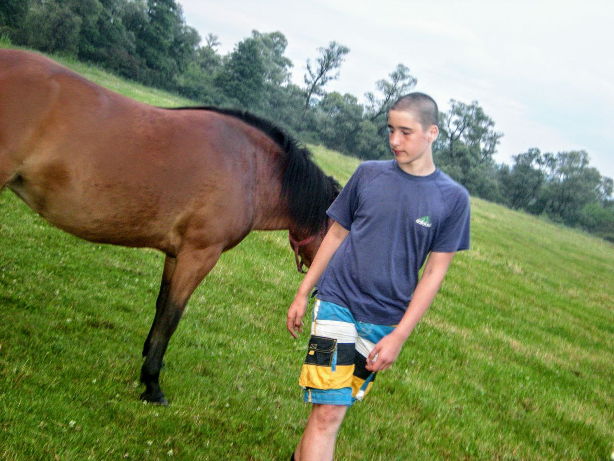
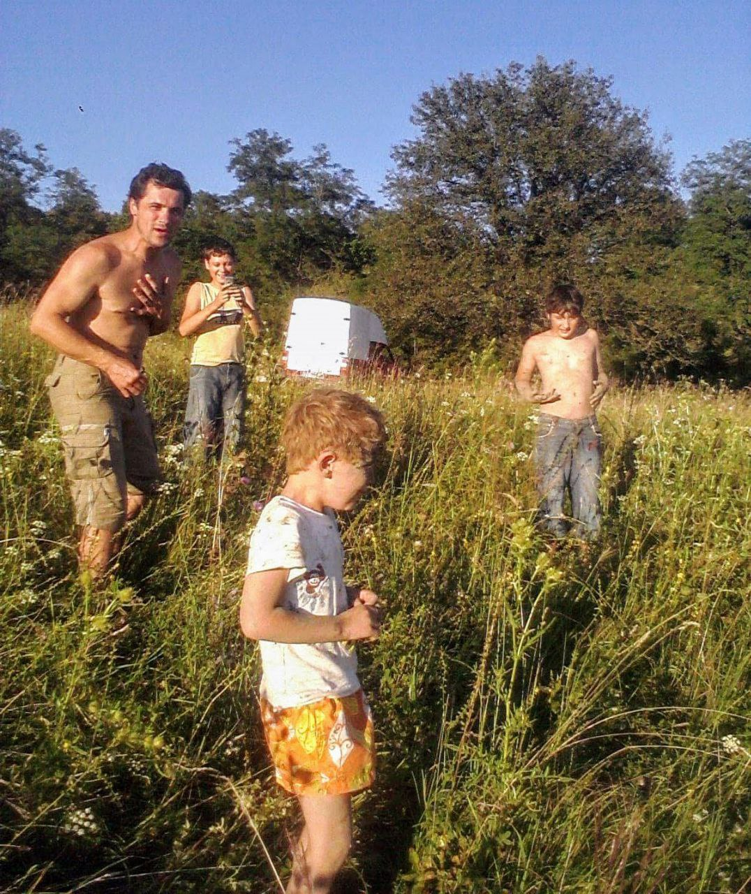
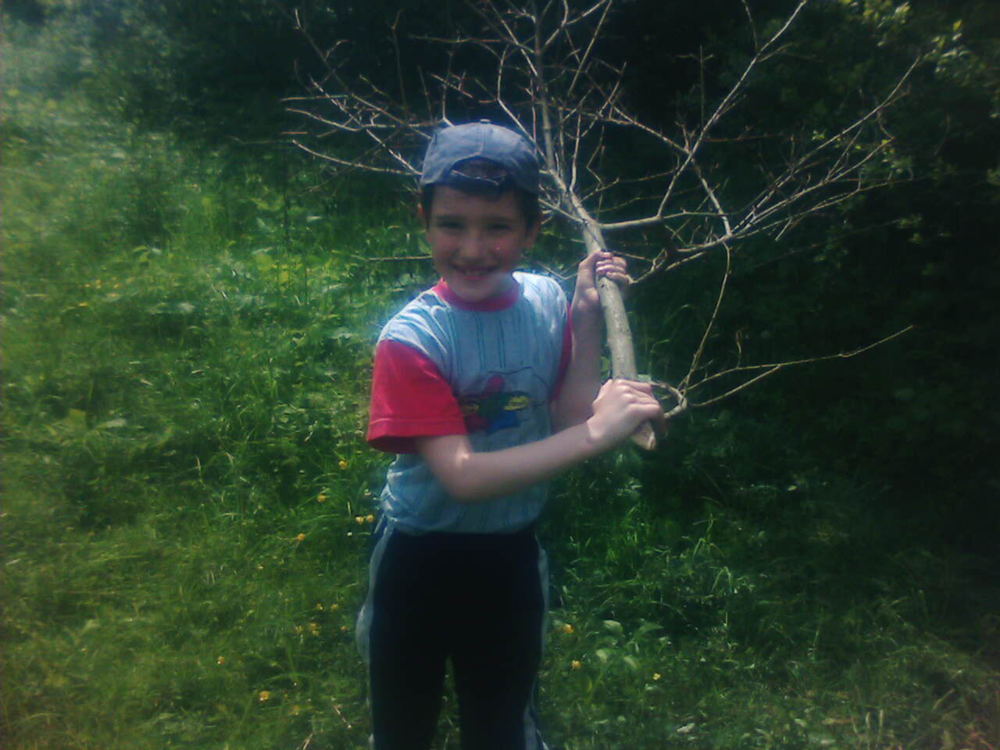
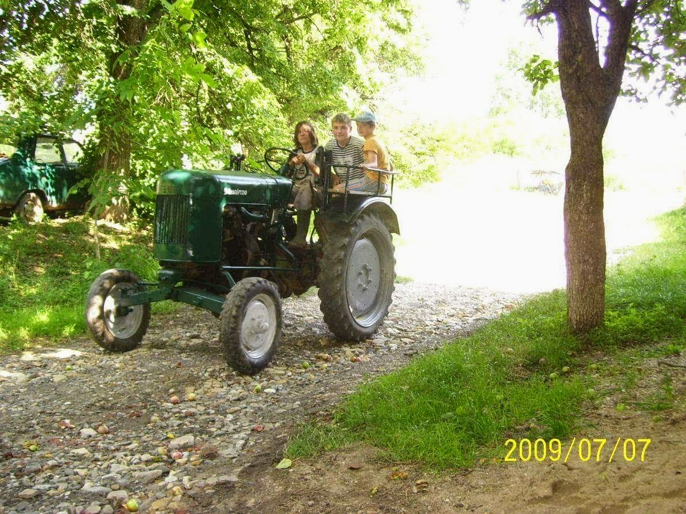

About Kiazaki
Wander into the Ki, a realm where the spirit roams. Here, solitude meets elegance, and the blade of the past cuts through the silence of time.

Wander into the Ki, a realm where the spirit roams. Here, solitude meets elegance, and the blade of the past cuts through the silence of time.
The past is dead. Your old self? Gone. This is where you shed what you held back—the doubts, the toxic ties, the version of you that settled for less. Ki isn't just energy; it's a rebirth. Wear your energy. Move in silence. Let your new life begin the moment you step into the skin. The door is open. Enter The Ki. Welcome to your Inner Child.

The noise? Mute it. The hype? An illusion. This is where you trade performance for power—the need for approval, the loud opinions, the constant broadcast of your next move. Low-key isn't just quiet. It's a strategy. Operate in silence. Build in shadows. Let your results make the sound your mouth never did. Be modest. Be humble. Stay Lō-Ki ローキー. The world distracts. You focus. This is the way of the subtle. Welcome to your advantage.

Follow the unseen hand that threads through the mist, guiding you to truths shrouded in silence.

A glimpse into the small wonders of a forgotten past.

Soft voices from a miniature world lost in time.

The untamed soul of a horse gallops through memory.

Waves of feeling ripple through the haze of nostalgia.

Shadows of yesterday linger in muted tones.

The hum of old steel echoes through the fields.

Character designs and concepts exploring the essence of Ki.
Animation work and motion design projects.
Traditional and digital painting explorations.